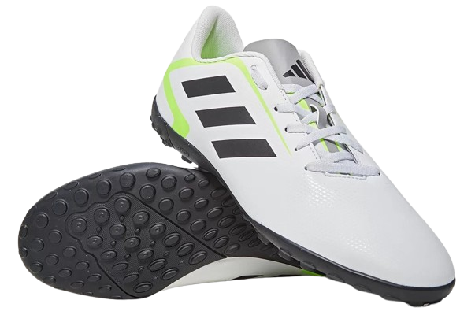
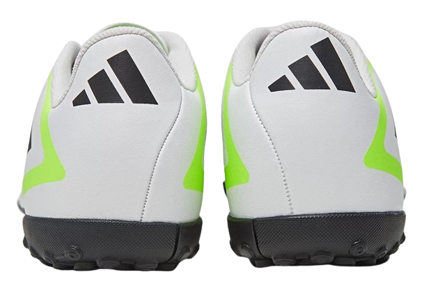

Tamanho:

Quantidade:

Descrição do Produto:
Leve seu time à vitória e se torne o craque do jogo com
a Chuteira Society indoor Artilheira VI Unissex! Com
design refinado e moderno, essa chuteira society
indoor unissex apresenta cabedal com tecido revestido
e textura de alta definição que garante um toque seguro
e preciso na bola. O forro têxtil dá um toque de conforto
a mais.